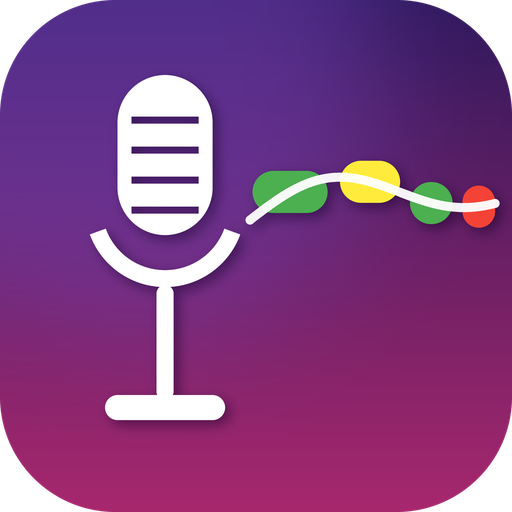

即時看到自己哪裡走音
鋼琴卷軸捲動顯示原唱的每個音符，你唱的音高即時畫成曲線：綠色是準、黃色差一點、紅色偏掉了。
每個音唱下去，就會像音遊一樣跳出 PERFECT／GREAT／GOOD／MISS 字卡。

KARAOKE BATTLE 星星你唱得好嗎？讓分數說話
三步驟開唱，利用 AI 分析自己的歌聲，邊玩邊練唱。
免費、開源（MIT）。首次啟動會自動下載模型，約 500 MB。
貼上 YouTube 連結，或把影音檔拖進來。可以一次排好幾首。
備歌完成後按「預覽」，戴上耳機按「開始錄製」。可以先聽導唱或伴奏。
唱完立刻給出總分，一目瞭然的介面可以立刻知道改進建議，另外可透過 LLM 獲得演唱上的建議。
導入多種AI輔助，大幅降低錯誤率，提供多種方便好用的功能。
鋼琴卷軸捲動顯示原唱的每個音符，你唱的音高即時畫成曲線：綠色是準、黃色差一點、紅色偏掉了。
每個音唱下去，就會像音遊一樣跳出 PERFECT／GREAT／GOOD／MISS 字卡。
鋼琴鍵盤把這首歌的音域填在琴鍵上，並標出男生、女生的舒適音域，告訴你這個 key 適合誰。
對著麥克風唱幾個音，就能量出自己的音域。按「一鍵移調」選男生、女生或你自己的音域，伴奏、音符和鍵盤一起移到適合的 key。
升降 Key 讓伴奏與參考音符一起移調。人聲返送把你的聲音和音樂一起送到耳機，還能加上 Hall 殘響。
唱在調上、跟得上拍子大約 80 分；要拿 91 分以上的 S，音準和節奏都得很穩。唱錯字或忘詞不扣分。
一鍵做成分享圖卡，也能匯出 1080p 演唱影片。每次演唱都留在曲庫，最高分一目了然。
回放時使用精確的 SwiftF0 模型，同時看時間和音準，除了 FAST／LATE 再加上 HIGH／LOW，一眼看出是快慢還是高低出了問題。
另外，重播檔可以匯出成 zip 傳給朋友，對方匯入後就能看你的演唱。
註：zip 檔案僅含有 JSON 演唱數據以及清唱檔案，不包含原始歌曲與歌詞。
唱完按「AI演唱建議」，App 會把每句歌詞的音準與節奏、長音，還有和之前幾次的比較，整理成一份分析檔。
下載或複製後貼到 Claude、ChatGPT 等 AI 助理，就能得到引用歌詞與時間點的建議和練習方法。也可以填入自己的 Claude 或 OpenAI API Key，按「問 AI」直接在 App 裡看建議。
註：使用 AI 會消耗您少許的 LLM Token。
來源影片若有字幕，就會直接當歌詞使用。沒有的話，也可以自行匯入字幕檔案，也可以自行貼上歌詞由 AI 產生時間軸，抑或是使用 Whisper 直接辨識歌詞（Beta 版）。
還能逐行修改文字與時間，再匯出成 SRT 或 LRC。
自動轉出的音符不對？按「編輯音符」，上下拖曳就能修正，拖曳時會播放聲音讓你試聽。改錯了隨時可以還原。
想不到要唱什麼？「熱門歌單」直接列出好樂迪、錢櫃、JOYSOUND、DAM 的每週點歌排行，以及 KKBOX 單曲週榜。每首歌都有「在 YouTube 搜尋」按鈕。
唱完後，App 把你錄下的音高曲線和原唱對齊比較，給出六項子分數，加權後換算成 0 到 100 分。
跟著原唱的旋律唱，每個音只要在半個半音以內就算準。分數最重，先顧好這一項。
先用「預覽」聽幾次，看鋼琴卷軸記住旋律；音符條變綠就是唱準了。唱不上去就調「升降 Key」，不會扣分。戴耳機，伴奏才不會漏進麥克風干擾偵測。
每個音的開始和結束都和原唱比對，像音遊一樣判定：差 50 毫秒內 PERFECT、100 毫秒內 GREAT、150 毫秒內 GOOD，再多就是 MISS。快歌判得比較嚴、慢歌比較寬。量過延遲的話，結果頁還會告訴你有沒有搶拍或拖拍的習慣。回放時的字卡同時看時間和音準，取較差的那個，並標出 FAST／LATE（早／晚）和 HIGH／LOW（高／低）；演唱時也會即時跳出字卡（右上的星星按鈕可關閉）。字卡只是顯示，不改變分數。
播放線碰到音符條開頭再出聲，句尾唱到音符條結束才收。結果下方會顯示你整體偏快還是偏慢，下次往反方向修正。快歌的判定比較嚴。
長音（0.4 秒以上）要唱得穩，音高不要飄來飄去。
長音用腹部撐住氣，音量保持一致，尾巴不要往下掉音。先求穩，再考慮加顫音。
原唱有顫音的歌，長音加上自然的顫音（每秒約 4 到 8 次）會加分；原唱沒用顫音的歌不計這項。
先把長音唱穩，在後半段加上輕微、規律的顫音。太大、太快的抖動不算；原唱沒顫音的歌不計這項。
強弱起伏跟著原唱走：該大聲的地方大聲，該輕的地方輕。
主歌收著唱、副歌放開唱，跟著原唱的強弱走。麥克風和嘴巴保持固定距離，音量變化才會被正確量到。
長音要唱滿原唱的長度，不要提早斷掉。
在句子之間提早換氣，長音唱到音符條結束再收。氣不夠時，寧可把前一句的尾巴收短一點去換氣。
八度音視為同一個音，唱高八度或低八度都算正確。
全曲用同一個半音位移量，App 會自動估計。
評分不辨識歌詞，忘詞用哼的也行。
免費、開源（MIT）。
karaoke_battle.exe。SmartScreen 出現時選「仍要執行」。感謝在正式版之前參與測試、回報問題的朋友們：
測試 50XX 系列顯示卡；發現 GPU 張量運算的錯誤、CPU／GPU 切換的錯誤與錄製時的字卡錯誤；提供編輯模式的 UI 建議、評分演算法建議與排行榜的靈感；直播實測。
發現 yt-dlp 的錯誤；測試 30XX 與 50XX 系列顯示卡；提供評分演算法與最高分刷新時機的建議，以及自動對齊字幕的想法；直播實測。
提供字幕 In／Out 的建議與優化、增加人工導入字幕功能、提供 Whisper 轉字幕的想法；發現處理中按下取消會死當的錯誤、樂曲之間的音量落差，以及部分情況下 F0 繪製錯誤。
測試 30XX 系列顯示卡；發現部分歌曲初始化會被阻擋的問題、錄製時體感上的延遲，以及「再唱一次」會重置設定的問題；提供匯入字幕時提示來源、刪除時確認永久刪除、下載失敗時直接顯示「重新下載」按鈕的想法；發現下載的歌曲之間音量落差大，並提出在背景做母帶後期處理的想法。
發現 FFmpeg 下載點的版本與路徑問題。
發現中文路徑的錯誤。
回放調整音量功能、左側放置鍵盤視覺、預覽狀態增加音高偵測與模擬練習；提出回放時可調整總音量的音量條；發現伴奏／導唱切換的延遲（改為同時載入並在背景轉檔）、AI 字幕與手動輸入的歌詞沒有羅馬拼音的問題；提出 MIDI 導唱的想法；測試台語歌。
原曲回測、回授反偵測。
發現預覽（練習）模式與評分模式容易混淆的問題，促成新增的模式標示 UI。
完整的引用格式（含 BibTeX）與各上游的要求見 docs/CITATIONS.md。